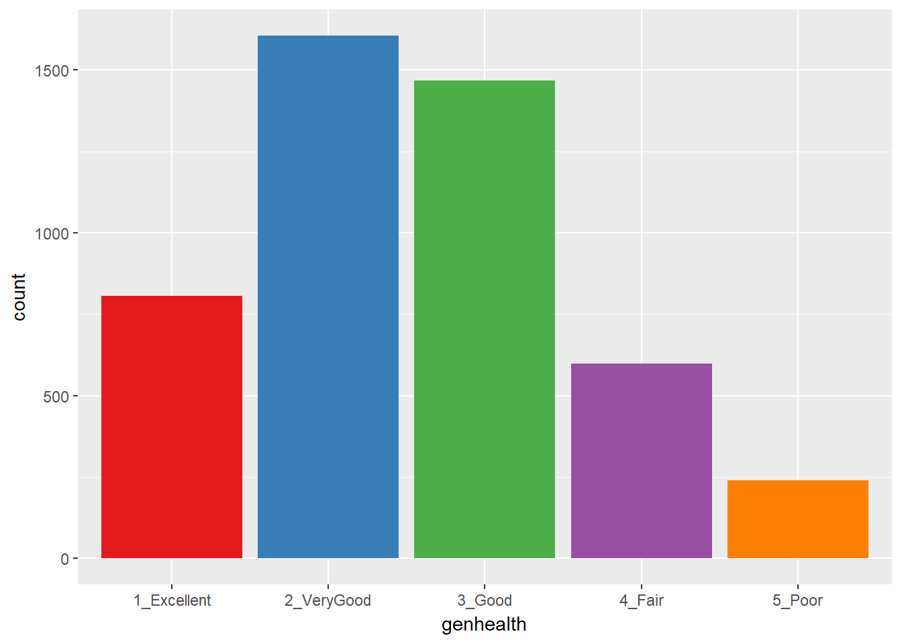

Chapter 19 Modeling an Ordinal Categorical Outcome in Ohio SMART
19.1 Preliminaries
library(gmodels)
Attaching package: 'gmodels'The following object is masked from 'package:pROC':
cilibrary(nnet)smart_oh <- read.csv("data/smart_ohio.csv") %>% tbl_df19.2 A subset of the Ohio SMART data
Let’s consider the following data. The outcome we’ll study now is genhealth, which has five ordered categories. I’ll include the subset of all observations in smart_oh with complete data on these 7 variables.
| Variable | Description |
|---|---|
SEQNO |
Subject identification code |
genhealth |
Five categories (1 = Excellent, 2 = Very Good, 3 = Good, 4 = Fair, 5 = Poor) on general health |
physhealth |
Now thinking about your physical health, which includes physical illness and injury, for how many days during the past 30 days was your physical health not good? |
costprob |
1 indicates Yes to “Was there a time in the past 12 months when you needed to see a doctor but could not because of cost?”, and 0 otherwise. |
sleephrs |
average amount of sleep the subject gets in a 24-hour period |
incomegroup |
8 income groups from < 10,000 to 75,000 or more |
bmi |
body-mass index |
To make my life easier later, I’m also going to drop the 11 subjects who have no missing data on these variables, but who also have a listed bmi above 60.
sm1 <- smart_oh %>%
select(SEQNO, genhealth, physhealth, costprob, sleephrs,
incomegroup, bmi) %>%
filter(bmi <= 60) %>%
drop_naIn total, we have 4719 subjects in the sm1 sample.
19.2.1 Several Ways of Storing Multi-Categorical data
We will store the information in our outcome, genhealth in both a numeric form (gen_n) and an ordered factor (gen_h) with some abbreviated labels) because we’ll have some use for each approach in this material.
sm1 <- sm1 %>%
mutate(genh = fct_recode(genhealth,
"1-E" = "1_Excellent",
"2_VG" = "2_VeryGood",
"3_G" = "3_Good",
"4_F" = "4_Fair",
"5_P" = "5_Poor"),
genh = factor(genh, ordered = TRUE),
gen_n = as.numeric(genhealth))
sm1 %>% count(genh, gen_n, genhealth)# A tibble: 5 x 4
genh gen_n genhealth n
<ord> <dbl> <fct> <int>
1 1-E 1. 1_Excellent 807
2 2_VG 2. 2_VeryGood 1606
3 3_G 3. 3_Good 1468
4 4_F 4. 4_Fair 598
5 5_P 5. 5_Poor 24019.3 Building Cross-Tabulations
Is income group associated with general health?
19.3.1 Using base table functions
addmargins(table(sm1$incomegroup, sm1$genh))
1-E 2_VG 3_G 4_F 5_P Sum
0-9K 20 32 55 49 27 183
10-14K 11 36 65 67 37 216
15-19K 29 67 126 79 46 347
20-24K 40 115 137 108 45 445
25-34K 60 170 186 83 30 529
35-49K 92 227 252 72 23 666
50-74K 151 297 261 46 18 773
75K+ 404 662 386 94 14 1560
Sum 807 1606 1468 598 240 4719More people answer Very Good and Good than choose the other categories. It might be easier to look at percentages here.
19.3.1.1 Adding percentages within each row
Here are the percentages giving each genhealth response within each income group.
addmargins(
round(100*prop.table(
table(sm1$incomegroup, sm1$genh)
,1)
,1)
)
1-E 2_VG 3_G 4_F 5_P Sum
0-9K 10.9 17.5 30.1 26.8 14.8 100.1
10-14K 5.1 16.7 30.1 31.0 17.1 100.0
15-19K 8.4 19.3 36.3 22.8 13.3 100.1
20-24K 9.0 25.8 30.8 24.3 10.1 100.0
25-34K 11.3 32.1 35.2 15.7 5.7 100.0
35-49K 13.8 34.1 37.8 10.8 3.5 100.0
50-74K 19.5 38.4 33.8 6.0 2.3 100.0
75K+ 25.9 42.4 24.7 6.0 0.9 99.9
Sum 103.9 226.3 258.8 143.4 67.7 800.1So, for example, 11.3% of the genhealth responses in subjects with incomes between 25 and 34 thousand dollars were Excellent.
19.3.1.2 Adding percentages within each column
Here are the percentages in each incomegroup within each genhealth response.
addmargins(
round(100*prop.table(
table(sm1$incomegroup, sm1$genh)
,2)
,1)
)
1-E 2_VG 3_G 4_F 5_P Sum
0-9K 2.5 2.0 3.7 8.2 11.2 27.6
10-14K 1.4 2.2 4.4 11.2 15.4 34.6
15-19K 3.6 4.2 8.6 13.2 19.2 48.8
20-24K 5.0 7.2 9.3 18.1 18.8 58.4
25-34K 7.4 10.6 12.7 13.9 12.5 57.1
35-49K 11.4 14.1 17.2 12.0 9.6 64.3
50-74K 18.7 18.5 17.8 7.7 7.5 70.2
75K+ 50.1 41.2 26.3 15.7 5.8 139.1
Sum 100.1 100.0 100.0 100.0 100.0 500.1From this table, we see that 7.4% of the Excellent genhealth responses were given by people with incomes between 25 and 34 thousand dollars.
19.3.2 Using xtabs
The xtabs function provides a formula method for obtaining cross-tabulations.
xtabs(~ incomegroup + genh, data = sm1) genh
incomegroup 1-E 2_VG 3_G 4_F 5_P
0-9K 20 32 55 49 27
10-14K 11 36 65 67 37
15-19K 29 67 126 79 46
20-24K 40 115 137 108 45
25-34K 60 170 186 83 30
35-49K 92 227 252 72 23
50-74K 151 297 261 46 18
75K+ 404 662 386 94 1419.3.3 Storing a table in a tibble
We can store the elements of a cross-tabulation in a tibble, like this:
(sm1.tableA <- sm1 %>% count(incomegroup, genh))# A tibble: 40 x 3
incomegroup genh n
<fct> <ord> <int>
1 0-9K 1-E 20
2 0-9K 2_VG 32
3 0-9K 3_G 55
4 0-9K 4_F 49
5 0-9K 5_P 27
6 10-14K 1-E 11
7 10-14K 2_VG 36
8 10-14K 3_G 65
9 10-14K 4_F 67
10 10-14K 5_P 37
# ... with 30 more rowsFrom such a tibble, we can visualize the data in many ways, but we can also return to xtabs and include the frequencies (n) in that setup.
xtabs(n ~ incomegroup + genh, data = sm1.tableA) genh
incomegroup 1-E 2_VG 3_G 4_F 5_P
0-9K 20 32 55 49 27
10-14K 11 36 65 67 37
15-19K 29 67 126 79 46
20-24K 40 115 137 108 45
25-34K 60 170 186 83 30
35-49K 92 227 252 72 23
50-74K 151 297 261 46 18
75K+ 404 662 386 94 14And, we can get the \(\chi^2\) test of independence, with:
summary(xtabs(n ~ incomegroup + genh, data = sm1.tableA))Call: xtabs(formula = n ~ incomegroup + genh, data = sm1.tableA)
Number of cases in table: 4719
Number of factors: 2
Test for independence of all factors:
Chisq = 763.3, df = 28, p-value = 1.067e-14219.3.4 Using CrossTable from the gmodels package
The CrossTable function from the gmodels package produces a cross-tabulation with various counts and proportions like people often generate with SPSS and SAS.
CrossTable(sm1$incomegroup, sm1$genh, chisq = T)
Cell Contents
|-------------------------|
| N |
| Chi-square contribution |
| N / Row Total |
| N / Col Total |
| N / Table Total |
|-------------------------|
Total Observations in Table: 4719
| sm1$genh
sm1$incomegroup | 1-E | 2_VG | 3_G | 4_F | 5_P | Row Total |
----------------|-----------|-----------|-----------|-----------|-----------|-----------|
0-9K | 20 | 32 | 55 | 49 | 27 | 183 |
| 4.077 | 14.722 | 0.065 | 28.726 | 33.635 | |
| 0.109 | 0.175 | 0.301 | 0.268 | 0.148 | 0.039 |
| 0.025 | 0.020 | 0.037 | 0.082 | 0.112 | |
| 0.004 | 0.007 | 0.012 | 0.010 | 0.006 | |
----------------|-----------|-----------|-----------|-----------|-----------|-----------|
10-14K | 11 | 36 | 65 | 67 | 37 | 216 |
| 18.214 | 19.141 | 0.072 | 57.372 | 61.606 | |
| 0.051 | 0.167 | 0.301 | 0.310 | 0.171 | 0.046 |
| 0.014 | 0.022 | 0.044 | 0.112 | 0.154 | |
| 0.002 | 0.008 | 0.014 | 0.014 | 0.008 | |
----------------|-----------|-----------|-----------|-----------|-----------|-----------|
15-19K | 29 | 67 | 126 | 79 | 46 | 347 |
| 15.513 | 22.106 | 3.020 | 27.902 | 45.549 | |
| 0.084 | 0.193 | 0.363 | 0.228 | 0.133 | 0.074 |
| 0.036 | 0.042 | 0.086 | 0.132 | 0.192 | |
| 0.006 | 0.014 | 0.027 | 0.017 | 0.010 | |
----------------|-----------|-----------|-----------|-----------|-----------|-----------|
20-24K | 40 | 115 | 137 | 108 | 45 | 445 |
| 17.125 | 8.771 | 0.015 | 47.232 | 22.107 | |
| 0.090 | 0.258 | 0.308 | 0.243 | 0.101 | 0.094 |
| 0.050 | 0.072 | 0.093 | 0.181 | 0.188 | |
| 0.008 | 0.024 | 0.029 | 0.023 | 0.010 | |
----------------|-----------|-----------|-----------|-----------|-----------|-----------|
25-34K | 60 | 170 | 186 | 83 | 30 | 529 |
| 10.259 | 0.559 | 2.793 | 3.802 | 0.356 | |
| 0.113 | 0.321 | 0.352 | 0.157 | 0.057 | 0.112 |
| 0.074 | 0.106 | 0.127 | 0.139 | 0.125 | |
| 0.013 | 0.036 | 0.039 | 0.018 | 0.006 | |
----------------|-----------|-----------|-----------|-----------|-----------|-----------|
35-49K | 92 | 227 | 252 | 72 | 23 | 666 |
| 4.208 | 0.001 | 9.696 | 1.821 | 3.489 | |
| 0.138 | 0.341 | 0.378 | 0.108 | 0.035 | 0.141 |
| 0.114 | 0.141 | 0.172 | 0.120 | 0.096 | |
| 0.019 | 0.048 | 0.053 | 0.015 | 0.005 | |
----------------|-----------|-----------|-----------|-----------|-----------|-----------|
50-74K | 151 | 297 | 261 | 46 | 18 | 773 |
| 2.676 | 4.376 | 1.753 | 27.557 | 11.555 | |
| 0.195 | 0.384 | 0.338 | 0.060 | 0.023 | 0.164 |
| 0.187 | 0.185 | 0.178 | 0.077 | 0.075 | |
| 0.032 | 0.063 | 0.055 | 0.010 | 0.004 | |
----------------|-----------|-----------|-----------|-----------|-----------|-----------|
75K+ | 404 | 662 | 386 | 94 | 14 | 1560 |
| 70.584 | 32.369 | 20.314 | 54.383 | 53.809 | |
| 0.259 | 0.424 | 0.247 | 0.060 | 0.009 | 0.331 |
| 0.501 | 0.412 | 0.263 | 0.157 | 0.058 | |
| 0.086 | 0.140 | 0.082 | 0.020 | 0.003 | |
----------------|-----------|-----------|-----------|-----------|-----------|-----------|
Column Total | 807 | 1606 | 1468 | 598 | 240 | 4719 |
| 0.171 | 0.340 | 0.311 | 0.127 | 0.051 | |
----------------|-----------|-----------|-----------|-----------|-----------|-----------|
Statistics for All Table Factors
Pearson's Chi-squared test
------------------------------------------------------------
Chi^2 = 763.3281 d.f. = 28 p = 1.066581e-142
19.4 Graphing Categorical Data
19.4.1 A Bar Chart for a Single Variable
ggplot(sm1, aes(x = genhealth, fill = genhealth)) +
geom_bar() +
scale_fill_brewer(palette = "Set1") +
guides(fill = FALSE)
or, you might prefer to plot percentages, perhaps like this:
ggplot(sm1, aes(x = genhealth, fill = genhealth)) +
geom_bar(aes(y = (..count..)/sum(..count..))) +
geom_text(aes(y = (..count..)/sum(..count..),
label = scales::percent((..count..) /
sum(..count..))),
stat = "count", vjust = 1,
color = "white", size = 5) +
scale_y_continuous(labels = scales::percent) +
scale_fill_brewer(palette = "Dark2") +
guides(fill = FALSE) +
labs(y = "Percentage")Use bar charts, rather than pie charts.
19.4.2 A Counts Chart for a 2-Way Cross-Tabulation
ggplot(sm1, aes(x = genhealth, y = incomegroup)) +
geom_count() 19.5 Building a Model for genh using sleephrs
To begin, we’ll predict each subject’s genh response using just one predictor, sleephrs.
19.5.1 A little EDA
Let’s start with a quick table of summary statistics.
sm1 %>% group_by(genh) %>%
summarize(n(), mean(sleephrs), sd(sleephrs), median(sleephrs))# A tibble: 5 x 5
genh `n()` `mean(sleephrs)` `sd(sleephrs)` `median(sleephrs)`
<ord> <int> <dbl> <dbl> <dbl>
1 1-E 807 7.05 1.29 7.
2 2_VG 1606 7.05 1.18 7.
3 3_G 1468 6.90 1.44 7.
4 4_F 598 6.64 1.74 7.
5 5_P 240 6.62 2.53 6.To actually see what’s going on, we might build a comparison boxplot, or violin plot. The plot below shows both, together, with the violin plot helping to indicate the discrete nature of the sleephrs data and the boxplot indicating quartiles and outlying values within each genhealth category.
ggplot(sm1, aes(x = genhealth, y = sleephrs)) +
geom_violin(aes(fill = genhealth), trim = TRUE) +
geom_boxplot(width = 0.2) +
guides(fill = FALSE, color = FALSE) +
theme_bw()19.5.2 Describing the Proportional-Odds Cumulative Logit Model
To fit the ordinal logistic regression model (specifically, a proportional-odds cumulative-logit model) in this situation, we’ll use the polr function in the MASS library.
- Our outcome is
genh, which has five ordered levels, with1-Ebest and5-Pworst. - Our model will include one quantitative predictor,
sleephrs.
The model will have four logit equations:
- one estimating the log odds that
genhwill be less than or equal to 1 (i.e.genhealth= 1_Excellent,) - one estimating the log odds that
genh\(\leq\) 2 (i.e.genhealth= 1_Excellent or 2_VeryGood,) - another estimating the log odds that
genh\(\leq\) 3 (i.e.genhealth= 1_Excellent, 2_VeryGood or 3_Good,) and, finally, - one estimating the log odds that
genh\(\leq\) 4 (i.e.genhealth= 1_Excellent, 2_VeryGood, 3_Good or 4_Fair)
That’s all we need to estimate the five categories, since Pr(genh \(\leq\) 5) = 1, because (5_Poor) is the maximum category for genhealth.
We’ll have a total of five free parameters when we add in the slope for sleephrs, and I’ll label these parameters as \(\zeta_1, \zeta_2, \zeta_3, \zeta_4\) and \(\beta_1\). The \(\zeta\)s are read as “zeta” values, and the people who built the polr function use that term.
The four logistic equations that will be fit differ only by their intercepts. They are:
\[ logit[Pr(genh \leq 1)] = log \frac{Pr(genh \leq 1}{Pr(genh > 1)} = \zeta_1 - \beta_1 sleephrs \]
which describes the log odds of a genh value of 1 (Excellent) as compared to a genh value greater than 1 (which includes Very Good, Good, Fair and Poor).
The second logit model is:
\[ logit[Pr(genh \leq 2)] = log \frac{Pr(genh \leq 2}{Pr(genh > 2)} = \zeta_2 - \beta_1 sleephrs \]
which describes the log odds of a genh value of 1 (Excellent) or 2 (Very Good) as compared to a genh value greater than 2 (which includes Good, Fair and Poor).
Next we have:
\[ logit[Pr(genh \leq 3)] = log \frac{Pr(genh \leq 3}{Pr(genh > 3)} = \zeta_3 - \beta_1 sleephrs \]
which describes the log odds of a genh value of 1 (Excellent) or 2 (Very Good) or 3 (Good) as compared to a genh value greater than 3 (which includes Fair and Poor).
Finally, we have
\[ logit[Pr(genh \leq 4)] = log \frac{Pr(genh \leq 4}{Pr(genh > 4)} = \zeta_4 - \beta_1 sleephrs \]
which describes the log odds of a genh value of 4 or less, which includes Excellent, Very Good, Good and Fair as compared to a genh value greater than 4 (which is Poor).
Again, the intercept term is the only piece that varies across the four equations.
In this case, a positive coefficient \(\beta_1\) for sleephrs means that increasing the value of sleephrs would increase the genh category (describing a worse level of general health, since higher values of genh are associated with worse health.)
19.5.3 Fitting a Proportional Odds Logistic Regression with polr
Our model m1 will use proportional odds logistic regression (sometimes called an ordered logit model) to predict genh on the basis of sleephrs. The polr function can help us do this. Note that we include Hess = TRUE to retain what is called the Hessian matrix, which lets R calculate standard errors more effectively in summary and other follow-up descriptions of the model.
m1 <- polr(genh ~ sleephrs,
data = sm1, Hess = TRUE)
summary(m1)Call:
polr(formula = genh ~ sleephrs, data = sm1, Hess = TRUE)
Coefficients:
Value Std. Error t value
sleephrs -0.1334 0.01957 -6.82
Intercepts:
Value Std. Error t value
1-E|2_VG -2.5148 0.1430 -17.5846
2_VG|3_G -0.8820 0.1389 -6.3518
3_G|4_F 0.6184 0.1385 4.4652
4_F|5_P 2.0201 0.1473 13.7181
Residual Deviance: 13594.01
AIC: 13604.01 confint(m1)Waiting for profiling to be done... 2.5 % 97.5 %
-0.17189503 -0.09518665 19.6 Interpreting Model m1
19.6.1 Looking at Predictions
Consider two individuals:
- Harry, who sleeps an average of 6 hours per night, so Harry’s
sleephrs= 6, and - Sally, who sleeps an average of 5 hours per night, so Sally’s
sleephrs= 5.
We’re going to start by using our model m1 to predict the genh for Harry and Sally, so we can see the effect (on the predicted genh probabilities) of a change of one unit in sleephrs.
For example, what are the log odds that Harry, who sleeps 6 hours, will describe his genh as Excellent (genh \(\leq\) 1)?
\[ logit[Pr(genh \leq 1)] = \zeta_1 - \beta_1 sleephrs \\ logit[Pr(genh \leq 1)] = -2.5156 - (-0.1335) sleephrs \\ logit[Pr(genh \leq 1)] = -2.5156 - (-0.1335) (6) = -1.7146 \]
That’s not much help. So we’ll convert it to a probability by taking the inverse logit. The formula is
\[ Pr(genh \leq 1) = \frac{exp(\zeta_1 + \beta_1 sleephrs)}{1 + exp(\zeta_1 + \beta_1 sleephrs)} = \frac{exp(-1.7146)}{1 + exp(-1.7146)} = \frac{0.180}{1.180} = 0.15 \]
So the model estimates a 15% probability that Harry will describe his genh as Excellent.
OK. Now, what are the log odds that Harry, who sleeps 6 hours, will describe his genh as either Excellent or Very Good (genh \(\leq\) 2)?
\[ logit[Pr(genh \leq 2)] = \zeta_2 - \beta_1 sleephrs \\ logit[Pr(genh \leq 2)] = -0.8823 - (-0.1335) sleephrs \\ logit[Pr(genh \leq 2)] = -0.8823 - (-0.1335) (6) = -0.0813 \]
Again, we’ll convert this to a probability by taking the inverse logit.
\[ Pr(genh \leq 2) = \frac{exp(\zeta_2 + \beta_1 sleephrs)}{1 + exp(\zeta_2 + \beta_1 sleephrs)} = \frac{exp(-0.0813)}{1 + exp(-0.0813)} = \frac{0.922}{1.922} = 0.48 \]
So, the model estimates a probability of .48 that Harry will describe his genh as either Excellent or Very Good, so by subtraction, that’s a probability of .33 that Harry describes his genh as Very Good.
Happily, that’s the last time we’ll calculate this by hand.
19.6.2 Making Predictions for Harry (and Sally) with predict
Suppose Harry sleeps for 6 hours on average, and Sally for 5.
temp.dat <- data.frame(name = c("Harry", "Sally"),
sleephrs = c(6,5))
predict(m1, temp.dat, type = "p") 1-E 2_VG 3_G 4_F 5_P
1 0.1526268 0.3270672 0.3254990 0.1385938 0.05621333
2 0.1361555 0.3103702 0.3368797 0.1528675 0.06372711The predicted probabilities of falling into each category of genh are:
| Subject | sleephrs |
Pr(1_E) | Pr(2_VG) | Pr(3_G) | Pr(4_F) | Pr(5_P) |
|---|---|---|---|---|---|---|
| Harry | 6 | 15.3 | 32.7 | 32.6 | 13.9 | 5.6 |
| Sally | 5 | 13.6 | 31.0 | 33.7 | 15.3 | 6.4 |
- Harry has a higher predicted probability of lower (healthier) values of
genh. Specifically, Harry has a higher predicted probability than Sally of falling into the Excellent and Very Good categories, and a lower probability than Sally of falling into the Good, Fair and Poor categories. - This means that Harry, with a higher
sleephrsis predicted to have, on average, a lower (that is to say, healthier) value ofgenh. - As we’ll see, this association will be indicated by a negative coefficient of
sleephrsin the proportional odds logistic regression model.
19.6.3 Predicting the actual classification of genh
The default prediction approach actually returns the predicted genh classification for Harry and Sally, which is just the classification with the largest predicted probability. Here, for Harry that is Very Good, and for Sally, that’s Good.
predict(m1, temp.dat)[1] 2_VG 3_G
Levels: 1-E 2_VG 3_G 4_F 5_P19.6.4 A Cross-Tabuation of Predictions?
addmargins(table(predict(m1), sm1$genh))
1-E 2_VG 3_G 4_F 5_P Sum
1-E 2 0 3 1 2 8
2_VG 750 1493 1278 471 155 4147
3_G 55 113 187 126 83 564
4_F 0 0 0 0 0 0
5_P 0 0 0 0 0 0
Sum 807 1606 1468 598 240 4719The m1 model classifies all subjects in the sm1 sample as either Excellent, Very Good or Good, and most subjects as Very Good.
19.6.5 The Fitted Model Equations
summary(m1)Call:
polr(formula = genh ~ sleephrs, data = sm1, Hess = TRUE)
Coefficients:
Value Std. Error t value
sleephrs -0.1334 0.01957 -6.82
Intercepts:
Value Std. Error t value
1-E|2_VG -2.5148 0.1430 -17.5846
2_VG|3_G -0.8820 0.1389 -6.3518
3_G|4_F 0.6184 0.1385 4.4652
4_F|5_P 2.0201 0.1473 13.7181
Residual Deviance: 13594.01
AIC: 13604.01 The first part of the output provides coefficient estimates for the sleephrs predictor, and these are followed by the estimates for the various model intercepts. Plugging in the estimates, we have:
\[ logit[Pr(genh \leq 1)] = -2.5156 - (-0.1335) sleephrs \\ logit[Pr(genh \leq 2)] = -0.8823 - (-0.1335) sleephrs \\ logit[Pr(genh \leq 3)] = 0.6186 - (-0.1335) sleephrs \\ logit[Pr(genh \leq 4)] = 2.0202 - (-0.1335) sleephrs \]
Note that we can obtain these pieces separately as follows:
m1$zeta 1-E|2_VG 2_VG|3_G 3_G|4_F 4_F|5_P
-2.5148414 -0.8819647 0.6183763 2.0200504 shows the boundary intercepts, and
m1$coefficients sleephrs
-0.1334493 shows the regression coefficient for sleephrs.
19.6.6 Interpreting the sleephrs coefficient
The first part of the output provides coefficient estimates for the sleephrs predictor.
- The estimated slope for
sleephrsis -0.133- Remember Harry and Sally, who have the same values of
bmiandcostprob, but Harry gets one more hour of sleep than Sally does. We noted that Harry is predicted by the model to have a smaller (i.e. healthier)genhresponse than Sally. - So a negative coefficient here means that higher values of
sleephrsare associated with more of the probability distribution falling in lower values ofgenh. - We usually don’t interpret this slope (on the log odds scale) directly, but rather exponentiate it.
- Remember Harry and Sally, who have the same values of
19.6.7 Exponentiating the Slope Coefficient to facilitate Interpretation
We can compute the odds ratio associated with sleephrs and its confidence interval as follows…
exp(coef(m1)) sleephrs
0.8750718 exp(confint(m1))Waiting for profiling to be done... 2.5 % 97.5 %
0.8420676 0.9092032 - So, if Harry gets one more hour of sleep than Sally, our model predicts that Harry will have 88% of the odds of Sally of having a larger
genhscore. That means that Harry is likelier to have a smallergenhscore.- Since
genhgets larger as a person’s general health gets worse (moves from Excellent towards Poor), this means that since Harry is predicted to have smaller odds of a largergenhscore, he is also predicted to have smaller odds of worse general health. - Our 95% confidence interval around that estimated odds ratio of 0.875 is (0.842, 0.909). Since that interval is entirely below 1, the odds of having the larger (worse)
genhfor Harry are statistically significantly lower than the odds for Sally. - So, an increase in
sleephrsis associated with smaller (better)genhscores.
- Since
19.6.8 Comparison to a Null Model
We can fit a model with intercepts only to test the significance of sleephrs in our model m1, using the anova function.
m0 <- polr(genh ~ 1, data = sm1)
anova(m1, m0)Likelihood ratio tests of ordinal regression models
Response: genh
Model Resid. df Resid. Dev Test Df LR stat. Pr(Chi)
1 1 4715 13641.21
2 sleephrs 4714 13594.01 1 vs 2 1 47.20218 6.402878e-12We could also compare model m1 to the null model m0 with AIC or BIC.
AIC(m1, m0) df AIC
m1 5 13604.01
m0 4 13649.21BIC(m1,m0) df BIC
m1 5 13636.31
m0 4 13675.0519.7 The Assumption of Proportional Odds
Let us calculate the odds for all levels of genh if a person gets six hours of sleep. First, we’ll get the probabilities, in another way, to demonstrate how to do so…
(prob.6 <- exp(m1$zeta - 6*m1$coefficients)/(1 + exp(m1$zeta - 6*m1$coefficients))) 1-E|2_VG 2_VG|3_G 3_G|4_F 4_F|5_P
0.1526268 0.4796939 0.8051929 0.9437867 (prob.5 <- exp(m1$zeta - 5*m1$coefficients)/(1 + exp(m1$zeta - 5*m1$coefficients))) 1-E|2_VG 2_VG|3_G 3_G|4_F 4_F|5_P
0.1361555 0.4465257 0.7834054 0.9362729 Now, we’ll calculate the odds, first for a subject getting six hours of sleep:
(odds.6 = prob.6/(1-prob.6)) 1-E|2_VG 2_VG|3_G 3_G|4_F 4_F|5_P
0.1801175 0.9219457 4.1332835 16.7893748 And here are the odds, for a subject getting five hours of sleep:
(odds.5 = prob.5/(1-prob.5)) 1-E|2_VG 2_VG|3_G 3_G|4_F 4_F|5_P
0.1576158 0.8067687 3.6169200 14.6919090 Now, let’s take the ratio of the odds for someone who sleeps 6 hours over the odds for someone who sleeps 5.
odds.6/odds.51-E|2_VG 2_VG|3_G 3_G|4_F 4_F|5_P
1.142763 1.142763 1.142763 1.142763 They are all the same. The odds ratios are equal, which means they are proportional. For any level of genh, the estimated odds that a person who sleeps 6 hours has better (lower) genh is about 1.14 times the odds for someone who sleeps 5 hours. Those who sleep more have higher odds of better (lower) genh. Less than 1 means lower odds, and more than 1 means greater odds.
Now, let’s take the log of the odds ratios:
log(odds.6/odds.5) 1-E|2_VG 2_VG|3_G 3_G|4_F 4_F|5_P
0.1334493 0.1334493 0.1334493 0.1334493 That should be familiar. It is the slope coefficient in the model summary, without the minus sign. R tacks on a minus sign so that higher levels of predictors correspond to the ordinal outcome falling in the higher end of its scale.
If we exponentiate the slope estimated by R (-0.128), we get 0.88. If we have two people, and A sleeps one more hour on average than B, then the estimated odds of A having a higher ‘genh’ (i.e. worse general health) are 88% as higher as B’s.
19.7.1 Testing the Proportional Odds Assumption
One way to test the proportional odds assumption is to compare the fit of the proportional odds logistic regression to a model that does not make that assumption. A natural candidate is a multinomial logit model, which is typically used to model unordered multi-categorical outcomes, and fits a slope to each level of the genh outcome in this case, as opposed to the proportional odds logit, which fits only one slope across all levels.
Since the proportional odds logistic regression model is nested in the multinomial logit, we can perform a likelihood ratio test. To do this, we first fit the multinomial logit model, with the multinom function from the nnet package.
(m1_multi <- multinom(genh ~ sleephrs, data = sm1))# weights: 15 (8 variable)
initial value 7594.937509
iter 10 value 6800.789221
final value 6794.943171
convergedCall:
multinom(formula = genh ~ sleephrs, data = sm1)
Coefficients:
(Intercept) sleephrs
2_VG 0.6974561 -0.001316394
3_G 1.0935031 -0.070984363
4_F 1.0634375 -0.199129778
5_P 0.2109232 -0.208238458
Residual Deviance: 13589.89
AIC: 13605.89 The multinomial logit fits four intercepts and four slopes, for a total of 8 estimated parameters. The proportional odds logit, as we’ve seen, fits four intercepts and one slope, for a total of 5. The difference is 3, and we use that number in the sequence below to build our test of the proportional odds assumption.
LL_1 <- logLik(m1)
LL_1m <- logLik(m1_multi)
(G <- -2 * (LL_1[1] - LL_1m[1]))[1] 4.125118pchisq(G, 3, lower.tail = FALSE)[1] 0.2482667The p value is fairly large, so it indicates that the proportional odds model fits about as well as the more complex multinomial logit. A non-significant p value here isn’t always the best way to assess the proportional odds assumption, but it does provide some evidence of model adequacy.
19.8 Can model m1 be fit using rms tools?
Yes.
d <- datadist(sm1)
options(datadist = "d")
m1_lrm <- lrm(genh ~ sleephrs, data = sm1, x = T, y = T)
m1_lrmLogistic Regression Model
lrm(formula = genh ~ sleephrs, data = sm1, x = T, y = T)
Frequencies of Responses
1-E 2_VG 3_G 4_F 5_P
807 1606 1468 598 240
Model Likelihood Discrimination Rank Discrim.
Ratio Test Indexes Indexes
Obs 4719 LR chi2 47.20 R2 0.011 C 0.546
max |deriv| 3e-12 d.f. 1 g 0.198 Dxy 0.092
Pr(> chi2) <0.0001 gr 1.219 gamma 0.119
gp 0.049 tau-a 0.068
Brier 0.248
Coef S.E. Wald Z Pr(>|Z|)
y>=2_VG 2.5148 0.1430 17.58 <0.0001
y>=3_G 0.8820 0.1389 6.35 <0.0001
y>=4_F -0.6184 0.1385 -4.47 <0.0001
y>=5_P -2.0201 0.1473 -13.72 <0.0001
sleephrs -0.1334 0.0196 -6.82 <0.0001
The model is highly significant (remember the large sample size) but very weak, with a Nagelkerke R2 of 0.01, and a C statistic of 0.55.
summary(m1_lrm) Effects Response : genh
Factor Low High Diff. Effect S.E. Lower 0.95 Upper 0.95
sleephrs 6 8 2 -0.26690 0.039134 -0.34360 -0.1902
Odds Ratio 6 8 2 0.76575 NA 0.70921 0.8268 A two-hour change in sleephrs is associated with an odds ratio of 0.77, with 95% confidence interval (0.72, 0.84). Since these values are all below 1, we have a clear indication of a significant effect of sleephrs with higher sleephrs associated with lower genh, which means, in this case, better health.
There is also a tool in rms called orm which may be used to fit a wide array of ordinal regression models. I suggest you read Frank Harrell’s book on Regression Modeling Strategies if you want to learn more.
19.9 Building a Three-Predictor Model
Now, we’ll model genh using sleephrs, bmi and costprob.
19.9.1 Scatterplot Matrix
GGally::ggpairs(sm1 %>%
select(bmi, sleephrs, costprob, genh))`stat_bin()` using `bins = 30`. Pick better value with `binwidth`.
`stat_bin()` using `bins = 30`. Pick better value with `binwidth`.
`stat_bin()` using `bins = 30`. Pick better value with `binwidth`.
We might choose to plot the costprob data as a binary factor, rather than the raw 0-1 numbers included above, but not at this time.
19.9.2 Our Three-Predictor Model, m2
m2 <- polr(genh ~ sleephrs + bmi + costprob, data = sm1)
summary(m2)
Re-fitting to get HessianCall:
polr(formula = genh ~ sleephrs + bmi + costprob, data = sm1)
Coefficients:
Value Std. Error t value
sleephrs -0.10455 0.019665 -5.317
bmi 0.08045 0.004226 19.036
costprob 0.78082 0.095410 8.184
Intercepts:
Value Std. Error t value
1-E|2_VG -0.0472 0.1873 -0.2519
2_VG|3_G 1.6772 0.1881 8.9151
3_G|4_F 3.2876 0.1930 17.0300
4_F|5_P 4.7470 0.2023 23.4671
Residual Deviance: 13160.49
AIC: 13174.49 This model contains four intercepts (to cover the five genh categories) and three slopes (one each for sleephrs, bmi and costprob.)
19.9.3 Does the three-predictor model outperform m1?
anova(m1, m2)Likelihood ratio tests of ordinal regression models
Response: genh
Model Resid. df Resid. Dev Test Df LR stat.
1 sleephrs 4714 13594.01
2 sleephrs + bmi + costprob 4712 13160.49 1 vs 2 2 433.5181
Pr(Chi)
1
2 0There is a statistically significant improvement in fit from model 1 to model 2. The AIC and BIC are also better for the three-predictor model than they were for the model with sleephrs alone.
AIC(m1, m2) df AIC
m1 5 13604.01
m2 7 13174.49BIC(m1, m2) df BIC
m1 5 13636.31
m2 7 13219.7119.9.4 Wald tests for individual predictors
To obtain the appropriate Wald tests, we can use lrm to fit the model instead.
d <- datadist(sm1)
options(datadist = "d")
m2_lrm <- lrm(genh ~ sleephrs + bmi + costprob,
data = sm1, x = T, y = T)
m2_lrmLogistic Regression Model
lrm(formula = genh ~ sleephrs + bmi + costprob, data = sm1, x = T,
y = T)
Frequencies of Responses
1-E 2_VG 3_G 4_F 5_P
807 1606 1468 598 240
Model Likelihood Discrimination Rank Discrim.
Ratio Test Indexes Indexes
Obs 4719 LR chi2 480.72 R2 0.103 C 0.634
max |deriv| 1e-08 d.f. 3 g 0.645 Dxy 0.267
Pr(> chi2) <0.0001 gr 1.906 gamma 0.267
gp 0.150 tau-a 0.198
Brier 0.231
Coef S.E. Wald Z Pr(>|Z|)
y>=2_VG 0.0472 0.1873 0.25 0.8010
y>=3_G -1.6773 0.1881 -8.92 <0.0001
y>=4_F -3.2877 0.1930 -17.03 <0.0001
y>=5_P -4.7470 0.2023 -23.47 <0.0001
sleephrs -0.1046 0.0197 -5.32 <0.0001
bmi 0.0805 0.0042 19.04 <0.0001
costprob 0.7808 0.0954 8.18 <0.0001
It appears that each of the added predictors (bmi and costprob) adds statistically detectable value to the model.
19.9.5 A Cross-Tabuation of Predictions?
addmargins(table(predict(m2), sm1$genh))
1-E 2_VG 3_G 4_F 5_P Sum
1-E 0 0 3 0 1 4
2_VG 685 1150 840 265 111 3051
3_G 119 449 608 309 114 1599
4_F 3 7 17 21 12 60
5_P 0 0 0 3 2 5
Sum 807 1606 1468 598 240 4719At least the m2 model predicted that a few of the cases will fall in the Fair and Poor categories, but still, this isn’t impressive.
19.9.6 Interpreting the Effect Sizes
We can do this in two ways:
- By exponentiating the
polroutput, which shows the effect of increasing each predictor by a single unit- Increasing
sleephrsby 1 hour is associated with reducing the odds (by a factor of 0.89 with 95% CI 0.86, 0.93)) of higher values ofgenh: hence increasingsleephrsis associated with increasing the odds of a response indicating better health. - Increasing
bmiby 1 kg/m2 is associated with increasing the odds (by a factor of 1.08 with 95% CI 1.07, 1.09)) of higher values ofgenh: hence increasingbmiis associated with reducing the odds of a response indicating better health. - Increasing
costprobfrom 0 to 1 is associated with an increase (by a factor of 2.17 with 95% CI 1.80, 2.62)) of a highergenhvalue. Since highergenhvalues indicate worse health, those withcostprob= 1 are modeled to have generally worse health.
- Increasing
exp(coef(m2)) sleephrs bmi costprob
0.9007276 1.0837784 2.1832652 exp(confint(m2))Waiting for profiling to be done...
Re-fitting to get Hessian 2.5 % 97.5 %
sleephrs 0.8665942 0.9360375
bmi 1.0748601 1.0928175
costprob 1.8111826 2.6328298- Or by looking at the summary provided by
lrm, which like all such summaries produced byrmsshows the impact of moving from the 25th to the 75th percentile on all continuous predictors.
summary(m2_lrm) Effects Response : genh
Factor Low High Diff. Effect S.E. Lower 0.95 Upper 0.95
sleephrs 6.00 8.000 2.000 -0.20910 0.039330 -0.28619 -0.13202
Odds Ratio 6.00 8.000 2.000 0.81131 NA 0.75112 0.87632
bmi 23.99 31.495 7.505 0.60381 0.031718 0.54165 0.66598
Odds Ratio 23.99 31.495 7.505 1.82910 NA 1.71880 1.94640
costprob 0.00 1.000 1.000 0.78082 0.095410 0.59382 0.96782
Odds Ratio 0.00 1.000 1.000 2.18330 NA 1.81090 2.63220 plot(summary(m2_lrm))19.9.7 Quality of the Model Fit
Model m2, as we can see from the m2_lrm output, is still weak, with a Nagelkerke R2 of 0.10, and a C statistic of 0.63.
19.9.8 Validating the Summary Statistics in m2_lrm
set.seed(43203); validate(m2_lrm) index.orig training test optimism index.corrected n
Dxy 0.2670 0.2690 0.2665 0.0026 0.2645 40
R2 0.1025 0.1041 0.1019 0.0022 0.1003 40
Intercept 0.0000 0.0000 -0.0064 0.0064 -0.0064 40
Slope 1.0000 1.0000 0.9888 0.0112 0.9888 40
Emax 0.0000 0.0000 0.0035 0.0035 0.0035 40
D 0.1017 0.1034 0.1010 0.0024 0.0993 40
U -0.0004 -0.0004 -1.4828 1.4824 -1.4828 40
Q 0.1021 0.1038 1.5838 -1.4800 1.5821 40
B 0.2306 0.2305 0.2308 -0.0003 0.2308 40
g 0.6450 0.6505 0.6424 0.0081 0.6369 40
gp 0.1497 0.1507 0.1491 0.0016 0.1481 40As in our work with binary logistic regression, we can convert the Dxy to C with C = 0.5 + (Dxy/2). Both the R2 and C statistics are pretty consistent with what we saw above.
19.9.9 Testing the Proportional Odds Assumption
Again, we’ll fit the analogous multinomial logit model, with the multinom function from the nnet package.
(m2_multi <- multinom(genh ~ sleephrs + bmi + costprob,
data = sm1))# weights: 25 (16 variable)
initial value 7594.937509
iter 10 value 6838.002224
iter 20 value 6561.870918
final value 6559.672254
convergedCall:
multinom(formula = genh ~ sleephrs + bmi + costprob, data = sm1)
Coefficients:
(Intercept) sleephrs bmi costprob
2_VG -1.314009 0.0009137165 0.07494024 0.2227114
3_G -2.503930 -0.0602649560 0.12741985 0.6945437
4_F -3.982395 -0.1631066255 0.16771482 1.1405275
5_P -4.113892 -0.1675476694 0.14171093 1.4240225
Residual Deviance: 13119.34
AIC: 13151.34 The multinomial logit fits four intercepts and 12 slopes, for a total of 16 estimated parameters. The proportional odds logit in model m2, as we’ve seen, fits four intercepts and three slopes, for a total of 7. The difference is 9, and we use that number in the sequence below to build our test of the proportional odds assumption.
LL_2 <- logLik(m2)
LL_2m <- logLik(m2_multi)
(G <- -2 * (LL_2[1] - LL_2m[1]))[1] 41.14883pchisq(G, 9, lower.tail = FALSE)[1] 4.699394e-06The result is highly significant, suggesting that we have a problem somewhere with the proportional odds assumption. When this happens, I suggest you build the following plot of score residuals:
par(mfrow = c(2,2))
resid(m2_lrm, 'score.binary', pl=TRUE)
par(mfrow= c(1,1))From this plot, bmi and costprob look pretty different as we move from the Very Good toward the Poor cutpoints, relative to sleephrs, which is more stable.
19.9.10 Plotting the Fitted Model
19.9.10.1 Nomogram
fun.ge3 <- function(x) plogis(x - m2_lrm$coef[1] + m2_lrm$coef[2])
fun.ge4 <- function(x) plogis(x - m2_lrm$coef[1] + m2_lrm$coef[3])
fun.ge5 <- function(x) plogis(x - m2_lrm$coef[1] + m2_lrm$coef[4])
plot(nomogram(m2_lrm, fun=list('Prob Y >= 2 (VG or worse)' = plogis,
'Prob Y >= 3 (Good or worse)' = fun.ge3,
'Prob Y >= 4 (Fair or Poor)' = fun.ge4,
'Prob Y = 5 (Poor)' = fun.ge5)))19.9.10.2 Using Predict and showing mean prediction on 1-5 scale
ggplot(Predict(m2_lrm, fun = Mean(m2_lrm, code = TRUE)))
The nomogram and Predict results would be more interesting, of course, if we included a spline or interaction term. Let’s do that in model m3_lrm, and also add the incomegroup information.
19.10 A Larger Model, including income group
m3_lrm <- lrm(gen_n ~ rcs(sleephrs,3) + rcs(bmi, 4) +
incomegroup + catg(costprob) +
bmi %ia% costprob,
data = sm1, x = T, y = T)
m3_lrmLogistic Regression Model
lrm(formula = gen_n ~ rcs(sleephrs, 3) + rcs(bmi, 4) + incomegroup +
catg(costprob) + bmi %ia% costprob, data = sm1, x = T, y = T)
Frequencies of Responses
1 2 3 4 5
807 1606 1468 598 240
Model Likelihood Discrimination Rank Discrim.
Ratio Test Indexes Indexes
Obs 4719 LR chi2 1159.61 R2 0.231 C 0.706
max |deriv| 1e-12 d.f. 14 g 1.097 Dxy 0.413
Pr(> chi2) <0.0001 gr 2.994 gamma 0.413
gp 0.236 tau-a 0.305
Brier 0.209
Coef S.E. Wald Z Pr(>|Z|)
y>=2 4.7764 0.5773 8.27 <0.0001
y>=3 2.9112 0.5758 5.06 <0.0001
y>=4 1.1172 0.5740 1.95 0.0516
y>=5 -0.4672 0.5743 -0.81 0.4160
sleephrs -0.4138 0.0420 -9.85 <0.0001
sleephrs' 0.2799 0.0324 8.65 <0.0001
bmi -0.0036 0.0223 -0.16 0.8719
bmi' 0.4846 0.1045 4.64 <0.0001
bmi'' -1.3758 0.2853 -4.82 <0.0001
incomegroup=10-14K 0.3688 0.1895 1.95 0.0517
incomegroup=15-19K -0.0273 0.1728 -0.16 0.8744
incomegroup=20-24K -0.2071 0.1667 -1.24 0.2142
incomegroup=25-34K -0.6931 0.1628 -4.26 <0.0001
incomegroup=35-49K -0.8813 0.1585 -5.56 <0.0001
incomegroup=50-74K -1.3348 0.1574 -8.48 <0.0001
incomegroup=75K+ -1.5934 0.1514 -10.53 <0.0001
costprob=1 1.0119 0.4440 2.28 0.0227
bmi * costprob -0.0214 0.0151 -1.42 0.1568
Another option here would have been to consider building incomegroup as a scored variable, with an order on its own, but I won’t force that here. Here’s the polr version…
m3 <- polr(genh ~ rcs(sleephrs,3) + rcs(bmi, 4) +
incomegroup + costprob +
bmi %ia% costprob, data = sm1)19.10.1 Cross-Tabulation of Predicted/Observed Classifications
addmargins(table(predict(m3), sm1$genh))
1-E 2_VG 3_G 4_F 5_P Sum
1-E 0 0 0 0 0 0
2_VG 628 1094 694 140 38 2594
3_G 171 495 726 382 153 1927
4_F 6 15 43 64 39 167
5_P 2 2 5 12 10 31
Sum 807 1606 1468 598 240 4719This model predicts more Fair results, but still far too many Very Good with no Excellent at all.
19.10.2 Nomogram
fun.ge3 <- function(x) plogis(x - m3_lrm$coef[1] + m3_lrm$coef[2])
fun.ge4 <- function(x) plogis(x - m3_lrm$coef[1] + m3_lrm$coef[3])
fun.ge5 <- function(x) plogis(x - m3_lrm$coef[1] + m3_lrm$coef[4])
plot(nomogram(m3_lrm, fun=list('Prob Y >= 2 (VG or worse)' = plogis,
'Prob Y >= 3 (Good or worse)' = fun.ge3,
'Prob Y >= 4 (Fair or Poor)' = fun.ge4,
'Prob Y = 5 (Poor)' = fun.ge5)))19.10.3 Using Predict and showing mean prediction on 1-5 scale
ggplot(Predict(m3_lrm, fun = Mean(m3_lrm, code = TRUE)))Here, we’re plotting the mean score on the 1-5 gen_n scale.
19.10.4 Validating the Summary Statistics in m3_lrm
set.seed(43221); validate(m3_lrm) index.orig training test optimism index.corrected n
Dxy 0.4127 0.4143 0.4101 0.0042 0.4084 40
R2 0.2307 0.2338 0.2278 0.0059 0.2247 40
Intercept 0.0000 0.0000 -0.0048 0.0048 -0.0048 40
Slope 1.0000 1.0000 0.9846 0.0154 0.9846 40
Emax 0.0000 0.0000 0.0042 0.0042 0.0042 40
D 0.2455 0.2493 0.2421 0.0072 0.2383 40
U -0.0004 -0.0004 -1.4339 1.4334 -1.4339 40
Q 0.2459 0.2497 1.6760 -1.4262 1.6722 40
B 0.2090 0.2087 0.2095 -0.0008 0.2098 40
g 1.0968 1.1043 1.0862 0.0180 1.0787 40
gp 0.2357 0.2365 0.2336 0.0028 0.2329 40Still not very impressive, but much better than where we started. It’s not crazy to suggest that in new data, we might expect a Nagelkerke R2 of 0.22 and a C statistic of 0.5 + (0.4088/2) = 0.7044.
19.11 References for this Chapter
Some of the material here is adapted from http://stats.idre.ucla.edu/r/dae/ordinal-logistic-regression/.
I also found great guidance at http://data.library.virginia.edu/fitting-and-interpreting-a-proportional-odds-model/
Other parts are based on the work of Jeffrey S. Simonoff (2003) Analyzing Categorical Data in Chapter 10. Related data and R code are available at http://people.stern.nyu.edu/jsimonof/AnalCatData/Splus/.
Another good source for a simple example is https://onlinecourses.science.psu.edu/stat504/node/177.
Also helpful is https://onlinecourses.science.psu.edu/stat504/node/178 which shows a more complex example nicely.